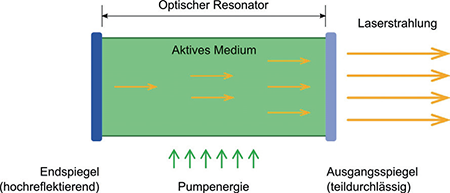

(1) Das Wort Laser ist eine Abkürzung und setzt sich aus den Anfangsbuchstaben der englischen Bezeichnung Light Amplification by Stimulated Emission of Radiation zusammen, zu Deutsch: "Lichtverstärkung durch stimulierte Emission von Strahlung". Dies beschreibt einen physikalischen Vorgang, der zur Erzeugung von Laserstrahlung führt. Dabei werden im ersten Schritt Atome oder Moleküle eines Lasermaterials ("aktives Medium") durch Energiezufuhr angeregt. Diesen Vorgang bezeichnet man als "Pumpen" (Abbildung A1.1). Als aktives Medium können Gase, Flüssigkeiten oder Festkörper verwendet werden. Die Energiezufuhr kann je nach aktivem Medium durch elektrische Gasentladungen, Blitzlampen, eine angelegte Spannung oder einen Laserstrahl eines anderen Lasers erfolgen. Die angeregten Atome oder Moleküle geben Lichtteilchen (Photonen) ab und kehren dabei wieder in den nicht angeregten Zustand zurück. Treffen diese Photonen auf andere Atome oder Moleküle im angeregten Zustand, so können diese mit einer gewissen Wahrscheinlichkeit ebenfalls Photonen abgeben, die mit den aufgetroffenen Photonen in Frequenz, Phase und Richtung übereinstimmen. Dieser als "stimulierte Emission" bezeichnete Vorgang läuft in einem optischen Resonator ab.
Solch ein Resonator ist z. B. ein Rohr, an dessen beiden Enden je ein Spiegel die Strahlung reflektiert. Diese durchläuft so mehrmals das aktive Medium und regt bei jedem Durchgang weitere Atome oder Moleküle zur Abgabe von Photonen an. Einer der beiden Spiegel ist teildurchlässig (Ausgangsspiegel), sodass ein Teil der Strahlung ausgekoppelt werden kann.

Abb. A1.1 Das Prinzip eines Lasers
(2) Die Laserstrahlung unterscheidet sich von der Strahlung anderer künstlicher Strahlungsquellen, wie z. B. Glühlampen oder Licht emittierenden Dioden (LED), im Wesentlichen durch die folgenden Eigenschaften:
(3) Laserstrahlung kann technisch in den Wellenlängenbereichen der optischen Strahlung zwischen 100 nm und 1 mm (Tabelle A1.1) realisiert werden: vom ultravioletten Bereich (UV-Bereich) über die sichtbare optische Strahlung (Licht) bis hin zum Infrarotbereich (IR-Bereich). Soweit Strahlung mit Wellenlängen unterhalb von 100 nm erzeugt wird, gelten die Bestimmungen gemäß dem Gesetz zum Schutz vor der schädlichen Wirkung ionisierender Strahlung (Strahlenschutzgesetz – StrlSchG) bzw. der auf Grundlage dieses Gesetzes erlassenen Verordnung.
(4) Laser, die mit einer Strahlungsdauer von mehr als 0,25 s emittieren, werden als Dauerstrichlaser (cw von continuous wave) bezeichnet. Impulslaser senden je nach Typ und Anwendung Impulse im Bereich von Femtosekunden bis 0,25 s aus. Die Impulswiederholfrequenzen sind von Lasertyp zu Lasertyp bei den unterschiedlichen Betriebsweisen verschieden.
Tab. A1.1 Wellenlängenbereiche der optischen Strahlung
| Wellenlängenbereich | Wellenlänge in nm |
| Ultraviolett C (UV-C) | 100 bis 280 |
| Ultraviolett B (UV-B) | 280 bis 315 |
| Ultraviolett A (UV-A) | 315 bis 400 |
| Sichtbarer Bereich | 380 bis 780 |
| Sichtbare Laserstrahlung | 400 bis 700 |
| Infrarot A (IR-A) | 700 bis 1 400 |
| Infrarot B (IR-B) | 1 400 bis 3 000 |
| Infrarot C (IR-C) | 3 000 bis 1 000 000 |